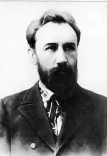

Грінченко Борис Дмитрович
(1863-1910)
письменник, вчений, публіцист, громадський діяч Народився Борис Дмитрович Грінченко 9 грудня 1863 року на хуторі Вільховий Яр поблизу села Руські Тишки, тепер Харківського району Харківської області, в родині збіднілих дрібнопомісних дворян. Нестримний потяг до знань, любов до слова, бажання оволодіти законами прекрасного виявилися у хлопця ще з раннього дитинства. Він багато і натхненно читає. Інтереси його різнобічні й грунтовні. Тонка і вродлива дитяча уява насичувалася вабливим світом образів, заохочувала до творчості. І скоро, під враженням прочитаного, підліток починає писати і сам. Він створює "самвидавівський" рукописний журнал, який заповнює власними оповіданнями та віршами. З 1874 по 1879 рік Борис Грінченко навчається у Харківському реальному училищі, де зближується з народницькими гуртками. За поширення заборонених царським урядом видань його заарештовують і кілька місяців тримають в ув’язненні. Після звільнення Борису Дмитровичу довелося залишити навчання і самому почати заробляти на прожиття. Суворі обставини дійсності змушують юнака дбати і про шматок хліба, і не зрікатися книжки. Так сталося, що, працюючи в казенній палаті, Грінченко мешкав у сім’ї шевця. Допитливий і працьовитий, він скоро навчився шити чоботи і мав від цього невеликий заробіток. Економлячи, обмежуючи себе у всьому, Борис таким чином заощаджував гроші на книги. Здобута самоосвіта дозволила Б.Грінченку скласти іспити на звання народного вчителя при Харківському університеті. З 1881 року починається його освітньо-педагогічна діяльність, яка тривала до 1893 року. Вчителював він у селах Харківщини, Сумщини, Катеринославщини. Зовнішній бік його біографії в цей час маловиразний, але внутрішньо це були неймовірно багаті й насичені роки. Учителювання Б.Грінченко поєднував з фольклорно-етнографічною, культурологічною, науковою та лінгвістичною справами. Багато пише. У цей час його різножанрові твори, підписані або власним прізвищем, або псевдонімом (П.Вартовий, Василь Чайченко, Б.Вільхівський, Іван Перекотиполе), регулярно друкуються в журналах та альманахах. Виходять у світ його поетичні збірки "Пісні Василя Чайченка" (1884 р.), "Під сільською стріхою" (1886 р.), "Під хмарним небом" (1893 р.), "Пісні та думи"(1895 р.),"Хвилини" (1903р.). З 1894 року Борис Дмитрович працює в Чернігівському губернському земстві. Важка й марудна робота забирала в письменника майже весь вільний час. Творчі миті потрібно було викроювати за рахунок сну й відпочинку. "На поезію завжди я мав тільки хороші хвилини, вільні від праці — часом любої, дорогої, здебільшого — нудної, наймитської. Моя пісня — то мій ро-бітницький одпочинок і моя робітницька молитва-надія", — зізнавався митець. За час роботи у земстві Б.Грінченко пише дилогію "Серед темної ночі" (1901 р.), і "Під тихими вербами" (1902 р.), публікує п’єси "Лісні зорі" (1897 р.), "Нахмарило" (1897 р.), "Степовий гість" (1898 р.), "Серед бурі" (1899 р.), "На громадській роботі" (1901 р.). Б.Грінченко був людиною надзвичайно працелюбною. Палка любов до рідної землі, до свого народу змушувала його "силуватися знаходити іскру світу там, де, здавалось, була сама темрява". Саме такими променями справжнього народного єства стало видання його наукових розвідок "Етнографічні матеріали, зібрані в Чернігівській і сусідніх з нею губерніях" у трьох томах (1895—1899 рр.), "З вуст народу" (1900 р.), "Література українського фольклору (1777—1900)" (1901 р.). У 1902 році письменник перебирається до Києва. Тут разом з дружиною Марією Загірною він трудиться над укладанням вершинної своєї праці — чотиритомного "Словаря української мови"(1907—1909рр.). Цю визначну роботу було відзначено академічною премією. Підірване задавненим туберкульозом здоров’я письменника (наслідки харківського ув’язнення) не витримало такого напруженого, безперервного ритму. Останньою краплею його життєвого випробування стала смерть дочки Насті та її малорічного сина. Різке загострення хвороби змусило його вирушити на лікування до Італії, але запізно — 6 травня 1910 року життя невтомного трударя обірвалося в м. Оскендалетті. Поховано Б.Грінченка в Києві, на Байковому кладовищі. Життя і діяльність Б.Грінченка для багатьох поколінь служить дієвим прикладом подвижництва на теренах розвою української культури і національної ідеї. Мабуть, найвлучніше сказав про нього інший український письменник Микола Чернявський: "Більше працював, ніж жив". І хоч за зрозумілим змістом цього визначення криється суттєва неточність — бо саме праця й була найвищим сенсом і покликанням його життя, — важливо, справді, усвідомити широту і неминуще значення творчого подвигу митця. Постать невтомного трудівника, що беззавітно віддав усі сили і час вітчизняній культурі, по праву може стояти поруч з нашими титанами нації, як Тарас Шевченко, Іван Франко, Пантелеймон Куліш, Леся Українка. Становлення його як письменника й громадянина відбувалося наприкінці XIX століття, в найглухішу пору суспільного життя України. То був час жорстоких і безтямних визисків національної свідомості, коли придушувалися найменші прояви і спроби самоусвідомлення і самоствердження себе як народу. То був час тотального витравлення всього українського — починаючи зі слова й закінчуючи ідеєю. Саме в цих умовах на історичну арену виходила молода плеяда борців за українську національну справу, найяскравішим представником якої, безперечно, був Борис Грінченко. Один з його літературних псевдонімів — Вартовий. Звісно ж, таким чином письменник свідомо визначав свою роль і своє місце в суспільних процесах. Борис Грінченко попри талант письменника мав ще й безсумнівне обдарування надзвичайно сумлінного науковця. Матеріалом його захоплень, предметом його досліджень, полем його діяльності стало СЛОВО. Слово — це та субстанція, що акумулює в собі творчу енергетику нації. І той, хто сповна розуміє це, — уже неординарна особистість. Б.Грінченко пішов далі у розумінні значення цього феномена. Ще влітку 1891 року ряд національно свідомих українців проголосили себе продовжувачами справи великого Кобзаря, створили "Братство тарасівців", яке об’єднувало студентську молодь та викладачів київських і харківських вузів. У своїй програмі вони проголошували: "Ми мусимо дбати про те, щоб українська мова запанувала скрізь на Вкраїні: в родині, в усяких справах, як приватних, так і загально суспільних, у громаді, у літературі і навіть у зносинах з усіма іншими народами, що живуть на Україні. Так, кожен з нас, свідомих українців, має промовляти в родині, в товаристві і взагалі скрізь, де його зрозуміють, по-українському". Щоденна наполеглива, натхненна культурно-освітня праця повинна була прищепити кожному українцеві непохитне переконання самоідентифікації, аби "відрізняти свою націю від інших і підносити національне питання й право вкраїнської нації скрізь, де тільки можливо". Головним змістом і смислом життя для Б.Грінченка стала боротьба за українську національну справу. У своїх "Листах з України Наддніпрянської", надрукованих у "Буковині" в 1892-1893 рр., він робить критичний огляд тогочасного суспільного стану, звертається до аналізування причин занепаду національних змагань та висловлює думи й побажання щодо активізації процесів відродження. Письменник глибоко й повно препарує ці проблеми, керуючись критерієм історичного підходу, обмірковує зміст і суть таких понять, як патріотизм, національна свідомість, українська інтелігенція, національна література. Його політичні роздуми торкаються й шляхів розвитку мови, культури, традицій. Саме через призму формування національної свідомості формує він і спадщину деяких українських письменників та істориків (зокрема Г.Квітки, М.Костомарова та ін.), з болем підсумовуючи їхню безпорадність або ж аморфність у цьому плані. Віддаючи належне своїм попередникам, він не може не втриматися від їдкого зауваження, констатуючи, що в тодішньому українському діячеві все ще сиділо "дві душі: одна українська, а друга — російська", а тому "хотілося і рідному краєві послужити", і не прогнівити того, хто може пожалувати "Станіслава на шию". Працюючи на ниві просвітництва, Б.Грінченко наочно постійно пересвідчувався у тій непоправній шкоді, що її завдавала русифікатор-ська політика царського уряду. Позбавлений вузької націоналістичної зашореності, письменник мудро і справедливо зазначав: "Не тоді добре єднається народ з народом, коли вони родичі, хоч би і близькі, а тоді, коли життя їх укупі — таке, що дає їм змогу зазнавати в сій спілці найбільш усякої користі, якомога більшого вдоволення своїх потреб як народу, якомога більше щастя". Митець надзвичайної працездатності, емоційний, палкий, людина дужого інтелекту, Б.Грінченко свідомо клав на вівтар ідеї і своє життя, і свою подвижницьку творчість: Прагне і розум, і серце великої праці такої, Щоб і вікам тим, що будуть, зосталась вона дорогою, Щоб і потомки далекі добра зазнавали від неї, Звали того невмирущим, хто силу робить її мав… Сьогодні ми знаємо Бориса Грінченка як письменника, поета, автора славнозвісного "Словаря української мови", але не слід забувати, можливо, найголовніше: він один з небагатьох будителів національної свідомості, один з небагатьох справжніх будівничих національної ідеї, один з небагатьох істинних патріотів України. ** Бувають люди, яких можемо назвати не тільки витворами, але й творцями свого часу. Час поставив їх на дорогу, власне, дав їм певний вихідний пункт; час показав їм тії болі, що на їх вони мають озиватися; час вложив їм у руки матеріал, з якого вони ліпитимуть свої витвори. Але ліплять вони з тієї глини часу самі, самі свідомо вибирають напрям од вихідного пункту вперед чи назад і самі ж ідуть наперекір часів, виліплюючи з наданого матеріалу те, що їм потрібно, а не те, чого вимагав би від їх всепотужний час. Вони ніколи не йдуть по лінії найменшого опору, а немов навмисне, з протесту, вибирають собі найтяжчу дорогу, найбільш терням закидану та перешкодами обставлену, і простують нею — куди? Ти ж керуй туди спокійно, Де горить мета твоя, —відповідає один з найвиразніших представників такого типу людей, наш-таки, український, письменник і громадянин Б.Д.Грінченко… …Справжня біографія Грінченка — то його невсипуща, безупинна, од першого виступу ще юнаком аж до останнього моменту, праця задля рідного народу, його повсякчасна готовність душу свою положити за трудящий люд. Замість сухих хронологічних дат бачимо в цій біографії довгу низку живих праць, що ними проложив у житті свою путь Грінченко. Стане тут у ряд — і його педагогічна робота, і заходи коло розвитку рідного слова, і студіювання народної словесності, й досліди над життям народним, і популяризаторська робота, і громадська публіцистика, і красне письменство. /**С.Єфремов.**/